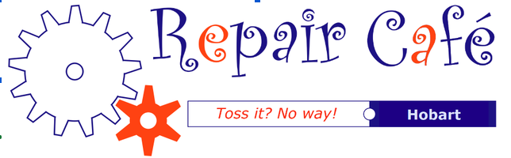

Tell us about it
Check in with the welcome team and describe what has happened to your item.

A neighbourly place to fix things
Bring along something that needs attention. Meet a volunteer repairer, learn what might be possible, and enjoy a cuppa while we give useful things another chance.
Repairs are collaborative and depend on the item, parts and available skills.
Good things, kept going
Repair Café Hobart is a community get-together where people bring repairable household items and work alongside volunteer fixers. It’s a place to share practical skills, ask questions and make connections.
We believe repair is a useful, hopeful way to reduce waste and help everyday objects last longer. Everyone is welcome to come along, whether you’re bringing an item, lending a hand or simply curious.
See how a café worksA relaxed way to get started
Bring your curiosity. We’ll work it out together.
Check in with the welcome team and describe what has happened to your item.
A volunteer will look at it with you. You’re encouraged to stay and take part as we investigate.
Have a cuppa, meet people and pick up a tip or two, whether or not a repair is possible today.
Repairs are offered in a shared community setting. Some items may be unsafe, too complex, or need parts we don’t have, so a repair can’t be guaranteed.
Bring it along
Volunteer skills vary at each session. Tell us what you have and we’ll do our best to point you in the right direction.
Small items, appliances and useful things that might be repairable.
There may be help with bikes, tech, sharpening and mechanical items.
Ask about sewing, patching, jewellery, leatherwork and other handcrafts.
The repair categories above reflect volunteer roles in the roster workbook. Availability at each café needs to be confirmed.
Your skills are welcome
There are many ways to pitch in, from greeting people and serving tea to sharing a repair skill. You don’t need to be an expert to help create a warm, welcoming café.
Volunteer at the next caféWays to lend a hand
Roles are based on the current roster workbook and may change for each event.
Volunteer signup
Tell us which role interests you and we’ll help you join the roster. The online signup link can be added here once the current form is confirmed.
Say hello
Questions about a repair, volunteering or the next café? Email the team or follow the official Repair Café Hobart Facebook page.
Contact Repair Café Hobart
Email: repaircafehobart@gmail.com
Facebook: Repair Café Hobart
Instagram: fixitPhil!
Venue: Kickstart Arts Inc, 12 St John’s Avenue, New Town
Acknowledgement of Country
Repair Café Hobart pays its respects to the original owners of the lands where we work, the palawa people. We recognise Tasmanian Aboriginal people as continuing custodians of Lutruwita, and honour Elders past, present and emerging.